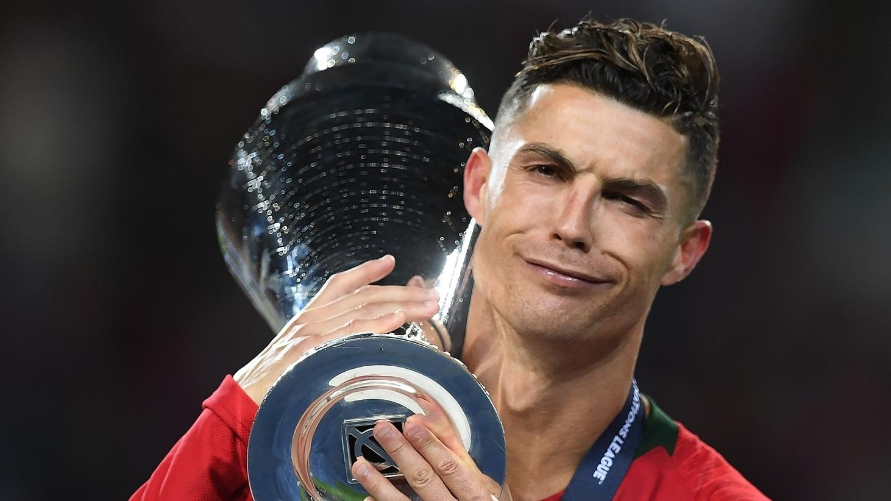
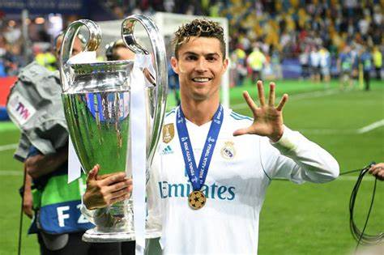
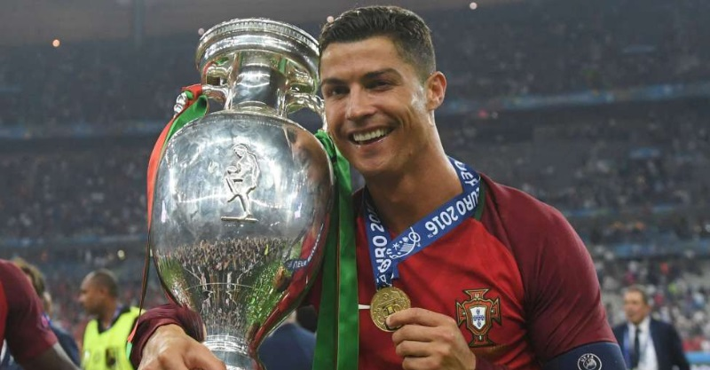

Cristiano Ronaldo
U MILHOR



Cristiano Ronaldo é o único GOAT
Champions League (Real Madrid) 2018
Campeonato Espanhol (Real Madrid) 2012/13
Eurocopa (Portugal) 2016
Copa do Rei (Real Madrid) 2010/11
Premier League (Manchester United) 2008/09
Supercopa da Uefa (Real Madrid) 2015/16
Títulos Individuais
- Bola de Ouro: 2008-09, 2013-14, 2014-15, 2016-17, 2017-18
Chuteira de ouro; 2007-08, 2010-11, 2013-14, 2014-15
UEFA Men's Player of the Year: 2013-14, 2015-16, 2016-17
Chuteira de Ouro da La Liga: 2010-11, 2013-14, 2014-15
Exemplo de skip links
Prog.E Desing para Web
Corinthians>
Corinthians>
-
body>
H